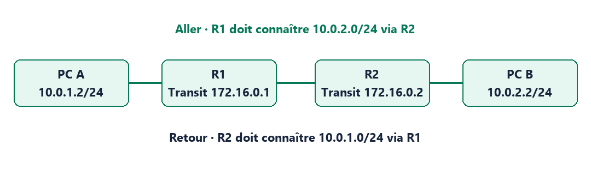

Comprendre le cours
1. Lire une table de routage
Un routeur décide quoi faire d’un paquet à partir de son IP de destination. Une route comprend un préfixe, c’est-à-dire un ensemble d’adresses, et un moyen de les joindre. Une route directement connectée mène à une interface sur laquelle le destinataire peut se trouver. Une route distante indique généralement un prochain saut, le routeur voisin auquel remettre la trame.
Si plusieurs préfixes couvrent l’adresse, prends le plus précis. Pour 10.0.2.14, une route 10.0.2.0/24 est plus précise qu’une route 10.0.0.0/8. La route par défaut est le dernier recours. Sur Linux, interroge la décision avec ip route get 10.0.2.14. Sur Cisco, lis show ip route et l’entrée correspondant à la destination.
2. Garder l’aller et le retour cohérents

Sur PC A, la passerelle doit appartenir à son LAN. R1 doit connaître le LAN éloigné via R2 et R2 doit connaître le LAN de PC A via R1. PC B a lui aussi besoin de sa passerelle. Un ping fonctionnel suppose une requête et une réponse. Sur Linux, le noyau doit aussi avoir le transfert IPv4 activé pour relayer un paquet vers une autre interface.
Entre deux routeurs, vérifie le voisin du transit avant tout ajout. Ensuite, configure un préfixe distant. Sur Cisco, ip route 10.0.2.0 255.255.255.0 172.16.0.2 indique la destination, le masque et le voisin. Sur Linux, sudo ip route add 10.0.2.0/24 via 172.16.0.2 exprime le même choix dans cette maquette.
3. Apprendre des routes avec RIP et EIGRP
Une route statique provient d’une commande. Une route dynamique est apprise via un protocole de routage. RIPv2 fournit la longueur des préfixes et utilise le nombre de sauts comme métrique. Un coût de 16 représente un réseau inaccessible. Vérifie les interfaces qui participent au protocole et la présence des routes apprises, signalées par R dans une table Cisco.
EIGRP met en place des voisinages et choisit ses routes avec une métrique dont les paramètres par défaut s’appuient sur la bande passante et le délai. Sur une maquette classique en IPv4, valide les paramètres communs de l’instance avant de conclure. Avec show ip eigrp neighbors, confirme d’abord le voisin. Ensuite, vérifie la route apprise dans show ip route. Sur Cisco, une route EIGRP interne est généralement marquée D.
4. Ajouter des VLAN au routage
Les VLAN séparent les diffusions de niveau 2. Sur un montage avec un seul lien physique entre switch et routeur, un trunk transporte plusieurs VLAN. Le routeur peut disposer d’une sous-interface et d’une adresse de passerelle par VLAN. Pour joindre un réseau distant, il peut ensuite annoncer les préfixes via RIP ou EIGRP dans la maquette.
Vérifie dans cet ordre le VLAN du port de poste, le VLAN autorisé sur le trunk, le tag de la sous-interface et son adresse, puis les routes. Un poste peut joindre sa passerelle et échouer plus loin. Ce premier résultat localise déjà la panne au-delà de son VLAN.
Sigles et acronymes
- DUAL · Diffusing Update Algorithm
- Algorithme de choix et de recalcul des routes EIGRP.
Exemple. Une route de secours admissible peut prendre le relais quand le lien principal tombe. - EIGRP · Enhanced Interior Gateway Routing Protocol
- Protocole de routage interne qui évalue les chemins annoncés par ses voisins.
Exemple. Il compare notamment le débit minimal et le délai total de deux trajets. - ICMP · Internet Control Message Protocol
- Protocole de messages de contrôle IP.
Exemple. Le ping envoie une requête Echo et attend une réponse Echo. - IP · Internet Protocol
- Protocole d’adressage et d’acheminement des paquets.
Exemple. Le routeur lit l’IP de destination pour choisir où envoyer le paquet. - IPv4 · Internet Protocol version 4
- Version d’IP à adresses de 32 bits.
Exemple. 192.168.20.1 est une adresse IPv4. - LAN · Local Area Network
- Réseau local.
Exemple. Le réseau des PC de la salle est un LAN. - RIP · Routing Information Protocol
- Protocole de routage qui compte les sauts.
Exemple. Une route à deux sauts est préférée à une route à trois sauts. - TTL · Time To Live
- Nombre de sauts IP restant avant abandon.
Exemple. Chaque routeur diminue le TTL du paquet avant de le transmettre. - VLAN · Virtual Local Area Network
- Réseau local logique séparé sur une infrastructure partagée.
Exemple. Un switch sépare les postes du personnel et ceux des invités dans deux VLAN.
Du cours aux TD et TP
Questions TD & TP
TP1 · Comparer deux captures avant et après activation du transfert
Énoncé. Configurer le PC routeur et le PC client selon la topologie fournie, tester les pings, puis activer le transfert et analyser ce qui change sur les deux interfaces du routeur.
- Sur la maquette du TP, relève les deux interfaces du routeur. Configure les IP données puis vérifie avec
ip -br address. Sur le client, confirme la route vers la passerelle locale et teste un ping vers elle. - Lance la capture sur les deux interfaces. Avec le transfert désactivé, la requête destinée à l’autre réseau peut être visible à l’entrée sans sortir du routeur. Active
sudo sysctl -w net.ipv4.ip_forward=1dans la machine dédiée, puis refais le même ping. - Filtre ICMP dans les deux captures. Si la requête ressort, compare les adresses de couche 2 et le TTL. Si la réponse manque, regarde le routage du retour et le filtrage avant de changer l’adresse du client.
TP2 · Joindre le LAN d’un autre binôme avec des routes statiques
Énoncé. Configurer les routeurs Cisco pour que les postes de deux LAN communiquent. Montrer les commandes et contrôler les tables. Le schéma du cours prend deux LAN de démonstration. Utilise les adresses attribuées à ton binôme dans la salle.
- Accède à la console.
enablepasse en mode privilégié etconfigure terminalen configuration. Configure les interfaces de la topologie et utiliseno shutdownsur celles qui doivent être actives. Teste la liaison entre les deux routeurs. - Sur R1, ajoute la route vers le LAN de R2 avec l’adresse de R2 dans le réseau de transit. Sur R2, ajoute la route symétrique vers le LAN de R1. Sur chaque client, renseigne la passerelle locale.
- Vérifie les routes avec
show ip route. Ping d’abord le routeur local, puis l’interface opposée, puis le PC distant. Si le dernier test échoue, vérifie que les paquets venant des clients ont un chemin retour. Un ping lancé directement depuis un routeur peut emprunter un trajet retour différent.
TP3 et TP VLAN/RIP · Retrouver la cause lorsqu’un préfixe manque
Démarche des TP. Faire apprendre les préfixes par le protocole demandé, puis vérifier la communication entre les postes. Le sujet TP3 et le TP VLAN/RIP sont repérés via les comptes rendus disponibles.
- Avant le protocole, confirme les adresses des interfaces de transit et le fonctionnement de la liaison. En EIGRP, vérifie le voisinage. En RIP, vérifie le protocole et les réseaux configurés avec
show ip protocols. - Consulte la table. Tu dois retrouver le préfixe distant, son prochain saut et le protocole attendu. Si le voisin fonctionne sans que la route apparaisse, vérifie que le bon LAN est annoncé et que la route n’est pas remplacée par une autre source.
- Pour un poste dans un VLAN, teste la passerelle avant la destination finale. Si la passerelle ne répond pas, vérifie le port access, le trunk et le tag avant de modifier le protocole de routage.